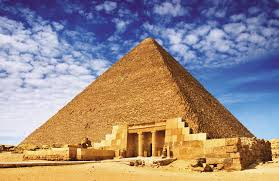

Cheopso piramidė, arba Didžioji Gizos piramidė – Egipto piramidė Gizoje, faraono Cheopso (Chufu) kapas. Tai didžiausia Senovės Egipto piramidė, pastatyta apie 2570 m. pr. m. e. 
Piramidė yra seniausias iš septynių pasaulio stebuklų ir vienintelis, išlikęs iki mūsų dienų. Senovės Egipto laikais jos vardas buvo „Chufu horizontas“. Visa struktūra, kurios originalus aukštis buvo apie 146,65 m ir kvadratinio pagrindo kraštinės ilgis 235,5 m, užima 40 000 kvadratinių metrų plotą, yra pastatyta iš apie 2,3 mln. akmens luitų. Dabartinis piramidės aukštis − 137,38 m, jos išorinės sienos paklotos iš 203 akmenų eilių. Sienų polinkio kampas 51°51'. Nustatyta, kad piramidės perimetro ilgio santykis su jos aukščiu buvo lygus 2Pi skaičiui. Piramidė pastatyta itin tiksliai: jai paruošto pagrindo aukščio skirtumai neviršija 2,1 cm, o kraštinių ilgio didžiausias skirtumas yra tik 4,4 cm. Piramidės akmenų svoris vidutiniškai yra 2,5 tonos. Piramidė statyta aukštyn mažėjančiais akmenimis. Kai kurie pagrindo akmenys sveria iki 15 tonų. Sunkiausi akmenys yra piramidės viduje, faraono Cheopso laidojimo patalpos lubose. Tai didžiuliai granito blokai, kurie gali sverti 50−80 tonų ir yra skirti išskirstyti piramidės akmenų svorio jėgas virš faraono laidojimo patalpos. Originaliai piramidė buvo padengta balto kalkakmenio apdailos blokais, kurie nuardyti XIII a. statant dabartinio Kairo namus. Manoma, kad piramidę statė apie 100 000 žmonių ilgiau kaip 20 metų.
Cheopsas, kaip ir jo pirmtakai, irgi norėjo būti palaidotas piramidėje. Reikėjo atrasti tinkamą vietą statybai, nes milžiniškas statinys sveria 6 400 000 tonų, taigi jo pagrindas turėjo būti itin tvirtas. Tinkama vieta rasta į pietvakarius nuo dabartinės Egipto sostinės Kairo, dykumos plynaukštėje, už septynių kilometrų į vakarus nuo Gizos. Ten tvirtas uolėtas pagrindas galėjo išlaikyti piramidės svorį. Parengiamuosiuose darbuose, kurie vyko apie dešimtį metų, dirbo apie 4000 žmonių – menininkai ir architektai, akmenskaldžiai ir įvairūs amatininkai. Egipto gyventojai statybose dalyvavo savanoriškai, jie tikėjo, kad prisidėję prie didingos užduoties įgaus dalelę dieviškojo faraono nemirtingumo. Darbininkai keltais persikeldavo per Nilą ir traukdavo į akmenų skaldyklą. Akmens luito aukštis ir ilgis turėjo būti – 0,80-1,45 m. Išorės apdailos sluoksnio balto kalkakmenio blokai buvo atgabenami iš kitoje Nilo pusėje buvusios Turos skaldyklų, didieji granito blokai − iš toli Nilo aukštupyje Asuano skaldyklų. Cheopso piramidės viduje 47 m ilgio koridorius, kylančia didžiąja galerija, veda į 10,5 m ilgio, 5,2 pločio ir 5,8 m aukščio patalpą – faraono laidojimo kambarį. Jis buvo išpuoštas granitu, lubos pastatytos penkiais aukštais, kad paskirstytų patalpai tenkantį aukščiau esančių akmenų masės svorį. Nekylant į karaliaus kambarį, kitas koridorius horizontaliai veda į patalpą, pramintą „Karalienės kambariu“. Kitas apie 100 m ilgio koridorius veda žemyn į po piramide esantį nebaigtą kambarį.